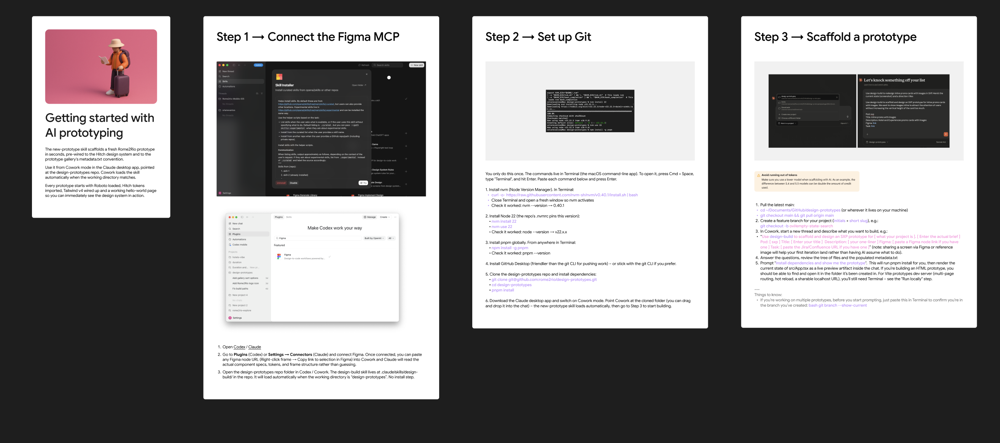
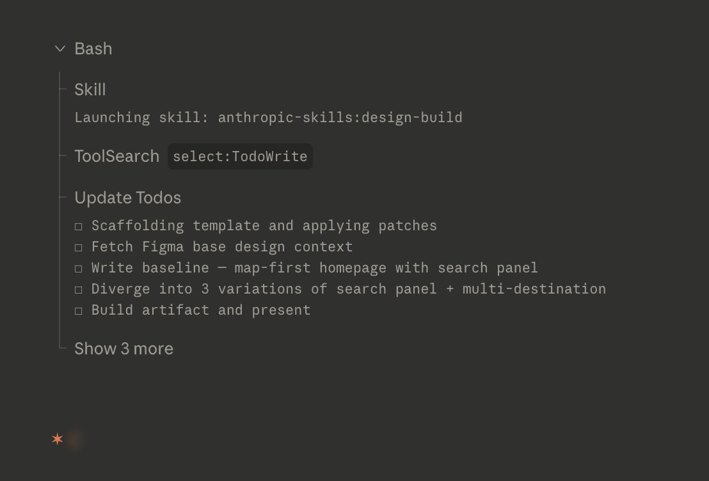

Rome2Rio · 2025–Present
Reusable design tools built on Claude Code and OpenAI Codex that take a written prompt. They connect to our Hitch design system through Figma MCP and Storybook so the UI variants they generate already use Rome2Rio's real components, which takes the guesswork out of early exploration.
My role
Design lead + tool builder
Tools
Claude Code, Figma, custom skills
Impact
Minutes vs. days for early exploration
Early design exploration eats time without adding much. When a team wants to look at three directions for a UI pattern the thinking isn't the expensive part. The expensive part is opening Figma, building each variant from scratch and polishing them enough to compare.
The design team at Rome2Rio is small and every hour spent on that kind of execution is an hour not spent on decisions, craft and the problems only designers can solve. I wanted to change that balance.

Custom AI skills built on Claude Code that turn a written design brief into several fully rendered interactive UI variants. A designer writes what they're exploring and why then gets a set of working variants they can compare in the browser within minutes.
The variants are interactive HTML and CSS components built to Hitch 2.0 standards, so they're real enough to judge how they behave as well as how they look.

"The point was never to replace design thinking. It was to make acting on it cheaper."
Traditional design tools are great at carrying out decisions but they aren't built to produce options cheaply. AI can change that if the prompting is careful enough to give results worth looking at.
The skill I built with Claude Code and Codex carries design system knowledge, component constraints and the Hitch brand into the generation. The variants come out on-brand and realistic instead of generic AI output that needs a lot of cleanup, so the team gets real exploration instead of a starting point that takes as much work as building from scratch.
It also changed how I see my role. It's about building better ways for the team to make products as well as building better products.
Building the skill was half the job and the other half was making sure the team could use it, which is why every designer had adopted it by day three. I help my designers by making sure they're trained on the latest trends and have projects they can own end to end that push their skills towards AI.
One designer was spending much of her time on repetitive work for the Ads team, so I encouraged her to turn it into a skill. The Sales team now use it to build their own ads directly, which has halved production time with little to no back and forth. Another designer created a prototypes repo in GitHub so the team can share AI prototypes directly with each other. I built an interface that lets marketing create visuals for their blog posts and more without waiting on design.